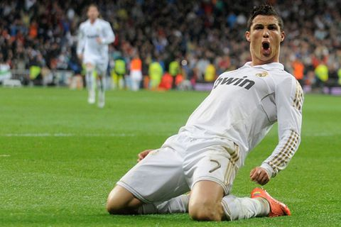

VĐV nổi tiếng nhất thế giới 2018: Ronaldo dẫn đầu, Messi xếp thứ 3

Từ ESPN vừa công bố top 5 vận động viên nổi tiếng nhất thế giới tính đến hiện tại. Cristiano Ronaldo xuất sắc dẫn đầu, trong khi Lionel Messi chỉ xếp thứ 3.
Ở tuổi 33, Ronaldo vẫn duy trì hiệu suất ghi bàn đáng nể trong màu áo Real Madrid. Mùa giải 2017/18, Ronaldo ghi 45 bàn sau 45 trận ra sân trên mọi đấu trường. Riêng tại Champions League, CR7 ghi đến 15 bàn và cùng Real thẳng tiến đến trận chung kết. Đó là cơ sở để ESPN bình chọn Ronaldo ở vị trí đầu tiên.
Barcelona dù sớm dừng chân ở tứ kết Champions League, nhưng cá nhân Messi trải qua một năm thành công. Messi là vua phá lưới tại La Liga 2017/18 với 34 bàn sau 36 trận ra sân.
Chưa dừng lại ở đó, anh còn là chủ nhân của danh hiệu Chiếc giày vàng châu Âu. Dù vậy, thành tích trên chỉ giúp Messi cán đích ở vị trí thứ 3 trong danh sách.
Người đứng giữa Ronaldo và Messi và LeBron James, siêu sao bóng rổ hiện đang khoác áo Cleveland Cavaliers. Không chỉ gói gọn ở phạm vi giải đấu NBA, tên tuổi của “King James” còn nổi tiếng trên toàn thế giới. Năm 2017, LeBron James cũng nắm giữ vị trí thứ 2 trong top VĐV nổi tiếng nhất thế giới.
Xếp ở vị trí thứ 4 là Neymar, ngôi sao đang thuộc biên chế của PSG. Hè 2017, Neymar rời Barcelona, gia nhập sân Công viên các Hoàng tử với giá trị chuyển nhượng kỷ lục 222 triệu euro. Sau thương vụ đó, Neymar vượt qua ranh giới của một cầu thủ xuất sắc và trở thành một biểu tượng thể thao.
Huyền thoại quần vợt thế giới Roger Federer là VĐV xếp ở vị trí cuối cùng trong top 5. Federer đứng trên Kevin Durant, siêu sao bóng rổ khác đang chơi cho Golden State Warriors, và Rafael Nadal, người vừa mới trở lại vị trí số 1 trên bảng xếp hạng ATP sau chức vô địch Rome Masters.